Next: Mohr-Coulomb plasticity. Up: Materials Previous: Incremental (visco)plasticity: additive decomposition Contents
In some sense this is a special case of the previous section, however, since it has been implemented as a Abaqus Material User Subroutine in CalculiX (in routine umat_abaqusnl_total), establishing a relationship between the corotational Cauchy stress and the corotational logarithmic strain it can also be used for large deformations.
In principal, the Johnson-Cook model [43] proposes a yield curve for a conventional plasticity model with isotropic hardening in the form:
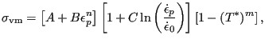 |
(404) |
where
 for for |
|||
| (405) |
Here,
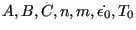 are material constants. The
constant
are material constants. The
constant  has the physical meaning of transition temperature, i.e. the
temperature above which the yield surface starts to shrink and
has the physical meaning of transition temperature, i.e. the
temperature above which the yield surface starts to shrink and  has the
physical meaning of melt temperature, i.e. the temperature above which the
yield surface is reduced to zero. The model is meant to describe highly
dynamical phenomena such as explosions, bird strike in a jet engine etc.
has the
physical meaning of melt temperature, i.e. the temperature above which the
yield surface is reduced to zero. The model is meant to describe highly
dynamical phenomena such as explosions, bird strike in a jet engine etc.
For
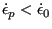 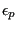 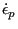
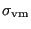 |
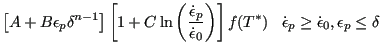 |
||
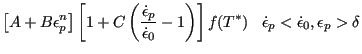 |
|||
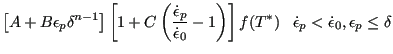 |
(406) |
where
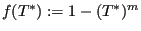 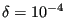
In the input deck the Johnson-Cook model is activated by the HARDENING=JOHNSON
COOK parameter on the *PLASTIC card. Underneath this card
the rate-independent terms are defined, i.e. the parameters
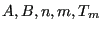 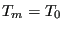 . If
. If  and
and
 .
.
The name of a material with Johnson-Cook hardening is not allowed to contain more than 69 characters.